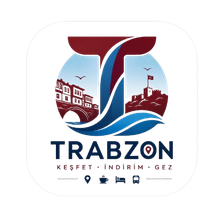

Trabzon Keşfet EnglishTRABZON KEŞFET MOBİL UYGULAMASI
Uygulama Desteği
Trabzon Keşfet; Trabzon’da gezilecek yerleri, dolmuş, otobüs ve raylı sistem bilgilerini, yerel işletmelerin indirim kuponlarını, hava durumunu ve şarj istasyonlarını tek uygulamada toplayan bağımsız bir şehir rehberidir. Uygulama ücretsizdir, hesap gerektirmez ve reklam içermez.
Bize ulaşın
Soru, öneri, hata bildirimi veya işletme başvurusu için uygulamadaki Menü → Genel İletişim formunu kullanabilir ya da aşağıdaki kanallardan yazabilirsiniz. Mesajlara genellikle 2 iş günü içinde yanıt verilir.
E-posta: trabzonkesfet@gmail.com
Telefon: +90 544 408 91 00
WhatsApp: wa.me/905444089100
Sık sorulanlar
Ulaşım, gezilecek yerler ve kuponlarla ilgili sık sorulan sorular: trabzonkesfet.com/sss ve uygulamada Menü → Sıkça Sorulanlar.
Anlaşmalı işletmeler
İşletme Modu’na giriş için gereken PIN kodu işletmeye Trabzon Keşfet tarafından verilir. PIN’inizi unuttuysanız veya başkasının öğrendiğinden şüpheleniyorsanız bize hemen yazın; PIN yenilenir ve açık oturumlar kapatılır.